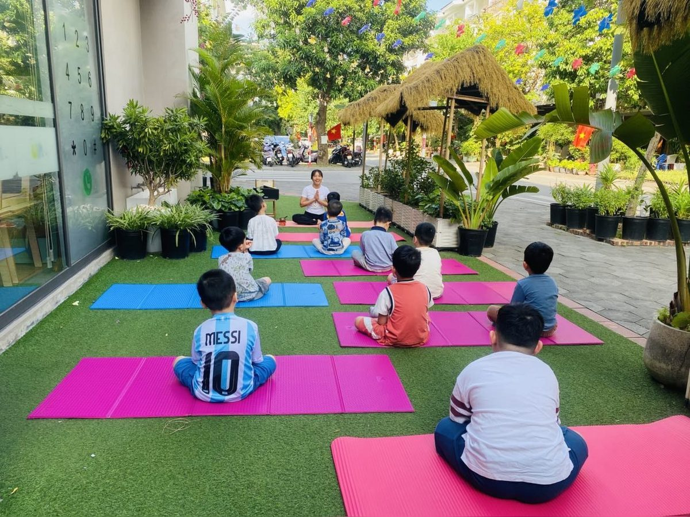
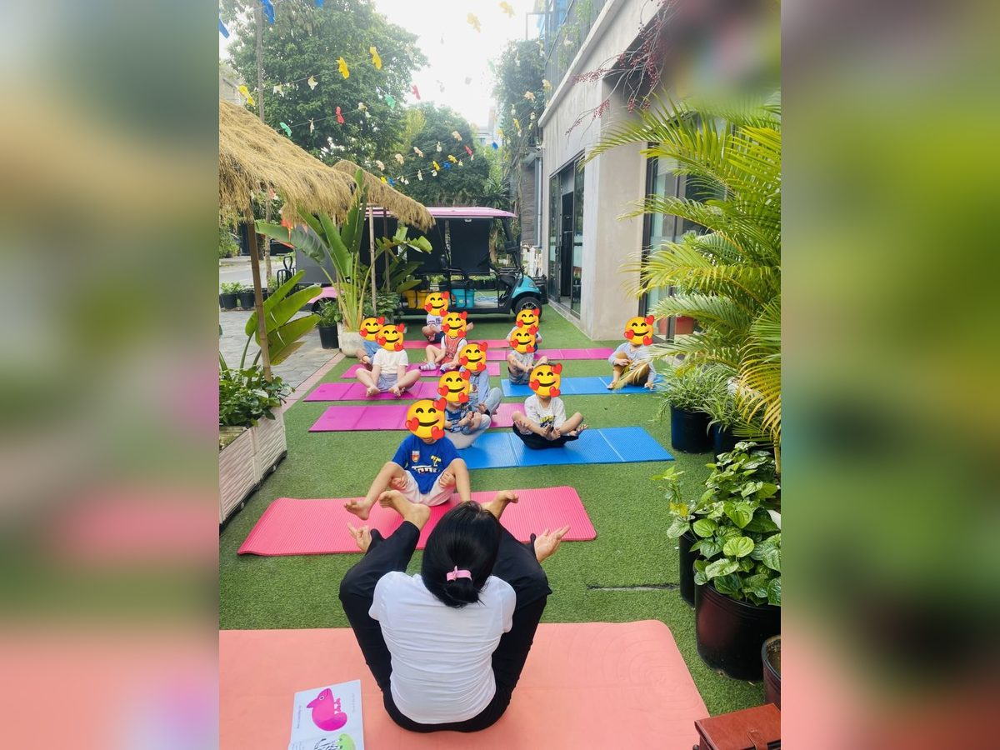
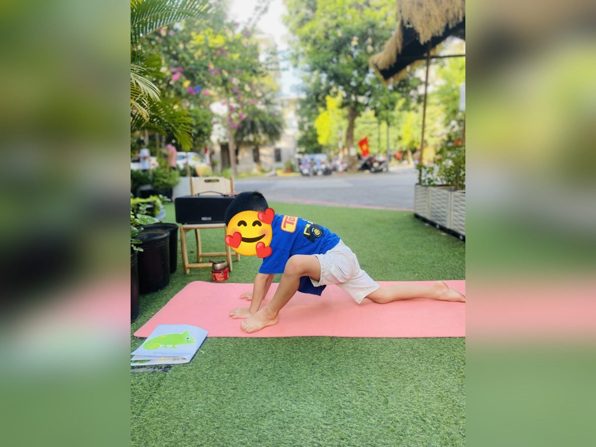
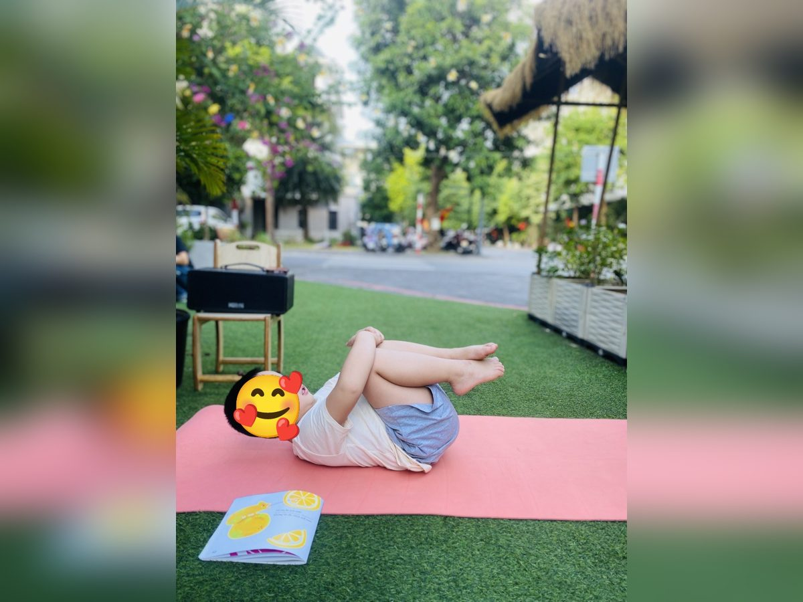
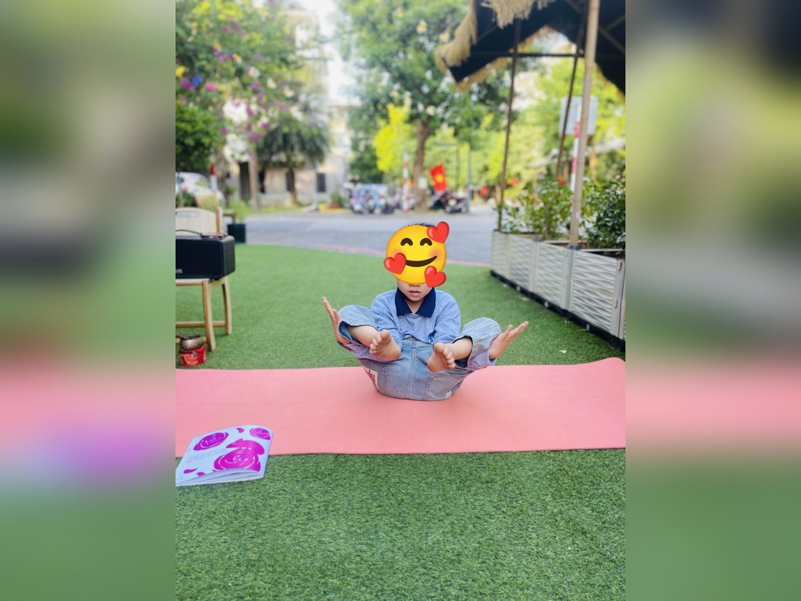
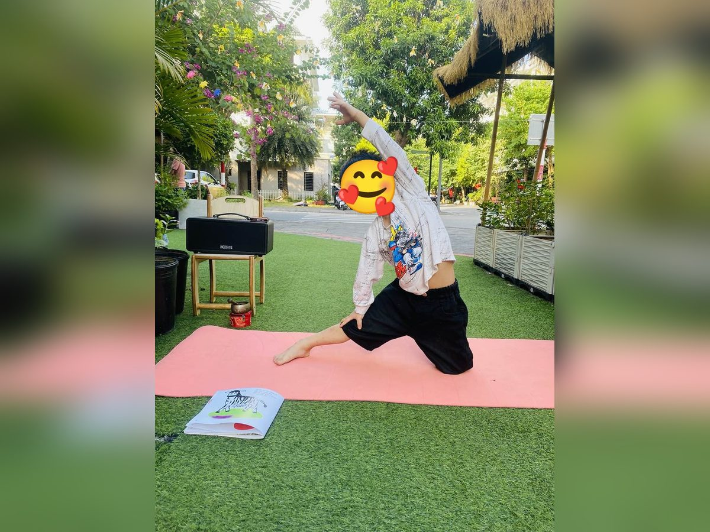
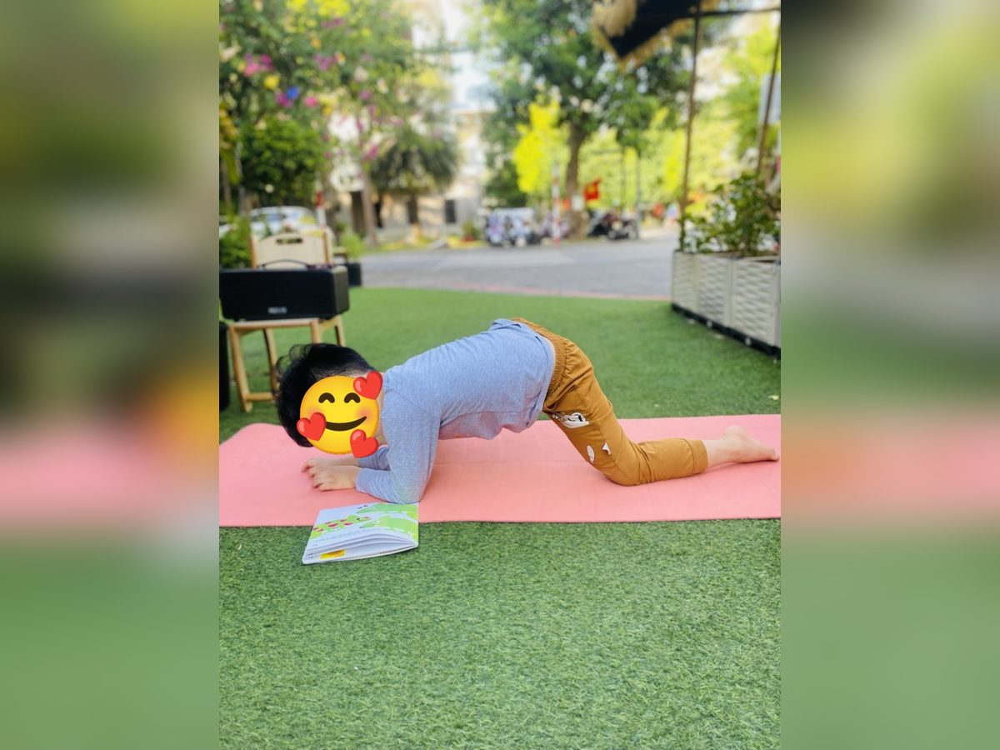
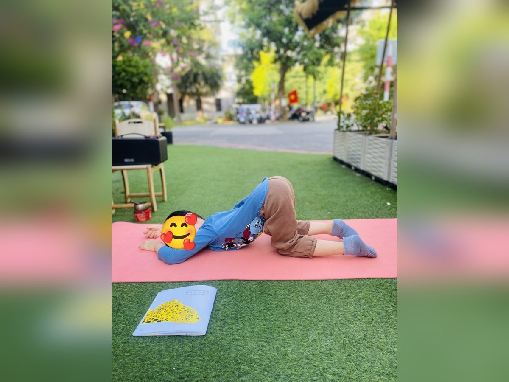
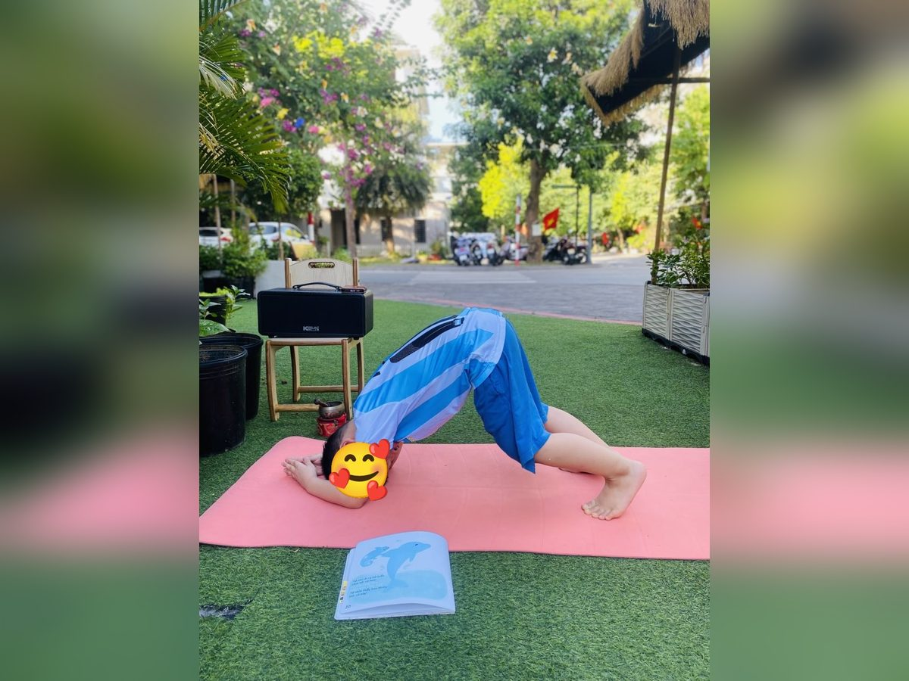
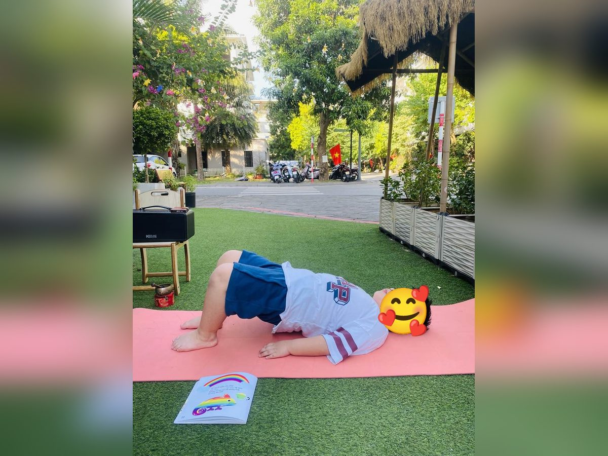

Yoga kể chuyện
Yoga kể chuyện: Chú tắc kè, nhà ảo thuật tài ba

Buổi hôm ấy lớp học ngoài sân. Có cỏ, có mái lá, có cờ giấy bay phấp phới trên cành cây. Và có một quyển truyện tranh mỏng: Chú tắc kè, nhà ảo thuật tài ba.
Chú tắc kè trong truyện có một phép thuật. Đi đến đâu, gặp ai, chú đổi màu theo người đó. Ăn cà chua thì đỏ. Lăn qua quả chanh thì vàng. Gặp ngựa vằn thì có sọc.
Trẻ con mê kiểu phép thuật này lắm. Cô thì mê vì một lý do khác.
Vì sao lại là chú tắc kè?
Tắc kè ngoài đời đổi màu không chỉ để trốn. Nó đổi màu khi trời lạnh, khi trời nóng, khi sợ hãi, khi phấn khích. Màu da là cảm xúc hiện ra bên ngoài.
Các con cũng vậy. Mới vui đó đã giận. Mới hăng hái đó đã muốn nằm lăn ra. Người lớn hay muốn các con “ngồi yên”, nhưng bảo một bạn năm tuổi ngồi yên thì cũng như bảo tắc kè đừng đổi màu.
Sophia không bắt các con đứng yên một màu. Cô cho các con đổi màu, thật nhiều lần, qua từng tư thế. Rồi cuối buổi, cô dẫn các con về với hơi thở. Về với chính màu của mình.
Trước khi mở sách: ngồi con bướm và thở
Cả lớp ngồi trên thảm, hai lòng bàn chân áp vào nhau, hai đầu gối thả xuống như đôi cánh bướm. Cô ngồi đối diện, quyển truyện mở sẵn bên cạnh.

Trước khi phép thuật bắt đầu, cô dạy các con một phép nhỏ. Cô gọi là phép thở đổi màu:
- Hít vào bằng mũi, chậm thôi. Tưởng tượng mình hít một màu mình thích vào trong bụng.
- Thở ra bằng miệng, thật khẽ. Màu ấy lan ra khắp người, tới tận đầu ngón chân.
- Ba hơi như vậy. Rồi hỏi con: “Hôm nay con là tắc kè màu gì?”
Có màu đỏ. Có màu xanh. Không có câu trả lời nào sai. Con chỉ cần dừng lại một chút, nhìn vào bên trong và gọi tên được màu của mình.
11 tư thế theo chuyến đi của chú tắc kè
Thứ tự tư thế đi theo các trang truyện. Mỗi bạn tập một tư thế, quyển truyện mở đúng trang ấy đặt cạnh thảm. Ảnh thật từ buổi học, khuôn mặt các bé được che để bảo vệ các con.
-

1🦎 Con tắc kè
Cô kể: “Trong khu vườn nhỏ có một chú tắc kè màu xanh lá. Chú bò thật thấp, thật chậm, chân trước, chân sau. Suỵt… đừng để ai nhìn thấy nhé.”
Cách làm: Từ tư thế đứng, bước một chân thật dài ra sau, gối sau đặt xuống thảm hoặc duỗi thẳng. Hai bàn tay chống xuống thảm, ở phía trong bàn chân trước. Mắt nhìn xuống thảm, lưng dài. Thở chậm 3 nhịp rồi đổi chân.
Điều cô để ý: Bàn chân trước hay bị trượt ra ngoài. Cô nhắc con đặt bàn chân ngay dưới gối, tay ở phía trong. Tắc kè bám chắc thì mới không bị rơi khỏi cành.
-
 2
2🍅 Quả cà chua
Cô kể: “Tắc kè thấy một quả cà chua đỏ mọng. Chú ăn một miếng. Ơ kìa! Người chú đỏ ửng lên, tròn xoe như quả cà chua.”
Cách làm: Quỳ hai gối, ngồi lên gót chân. Thở ra, cúi người về trước cho trán chạm thảm. Hai tay đặt dưới trán hoặc duỗi xuôi theo người. Lưng tròn lại như quả cà chua. Thở 3 đến 5 nhịp, nghe bụng phồng lên chạm vào đùi.
Điều cô để ý: Đây là chỗ nghỉ của cả buổi. Bạn nào mệt, bạn nào thấy lớp ồn quá, cô cho về Quả cà chua. Úp mặt xuống thảm, thở. Một lát là con dịu lại.
-

3🍋 Quả chanh
Cô kể: “Rồi tắc kè lăn qua một quả chanh. Chua quá! Người chú vàng óng, cuộn tròn lại như quả chanh.”
Cách làm: Nằm ngửa. Co hai gối lên ngực, hai tay ôm lấy ống chân. Đầu nằm trên thảm hoặc hơi nhấc lên. Có thể lắc nhẹ sang trái, sang phải như quả chanh lăn. Thở 3 nhịp.
Điều cô để ý: Khi ôm gối, bụng các con được xoa nhẹ theo từng hơi thở. Cô hay để con lăn qua lăn lại một chút. Lưng được massage, các con cười khúc khích.
-
 4
4🍌 Quả chuối
Cô kể: “Ở góc vườn có nải chuối chín vàng. Tắc kè đứng thẳng lên, cong mình như một quả chuối.”
Cách làm: Đứng hai chân sát nhau, vươn hai tay lên đầu, áp hai lòng bàn tay vào nhau. Hít vào, kéo người cao lên. Thở ra, nghiêng người sang một bên thành hình quả chuối cong. Hít vào về giữa, thở ra nghiêng bên kia.
Điều cô để ý: Các con hay ưỡn bụng hoặc xoay người ra trước. Cô bảo con tưởng tượng mình đứng giữa hai bức tường. Chỉ nghiêng sang bên, không đổ về trước.
-

5🌸 Bông hoa
Cô kể: “Tắc kè chui vào vườn hoa hồng. Người chú hồng lên. Chú ngồi giữa những bông hoa, nở ra thật đẹp.”
Cách làm: Ngồi, hai lòng bàn chân chạm nhau như tư thế con bướm. Luồn hai tay xuống dưới hai gối, lòng bàn tay ngửa lên. Ngả người ra sau một chút, nhấc hai bàn chân khỏi thảm, giữ thăng bằng trên mông. Lưng thẳng, ngực mở như bông hoa nở.
Điều cô để ý: Tư thế thăng bằng nên lúc đầu bạn nào cũng lắc lư. Cô cho con giữ bàn chân chạm thảm trước, nở hoa cho đẹp đã. Vững rồi mới nhấc chân lên.
-

6🦓 Ngựa vằn
Cô kể: “Ra khỏi vườn, tắc kè gặp bạn ngựa vằn. Phù phép! Người chú có sọc đen, sọc trắng. Chú vươn cổ dài như bạn ngựa.”
Cách làm: Quỳ hai gối. Duỗi một chân thẳng sang ngang, bàn chân đặt trên thảm. Tay cùng bên đặt lên đùi chân duỗi. Tay kia vươn qua đầu, nghiêng người về phía chân duỗi. Giữ 3 nhịp thở rồi đổi bên.
Điều cô để ý: Gối đang quỳ phải nằm ngay dưới hông thì con mới vững. Cô hay nhắc bàn chân duỗi đặt cả lòng bàn chân xuống thảm, như móng ngựa đứng chắc trên cỏ.
-
 7
7🦒 Hươu cao cổ
Cô kể: “Tắc kè đi tiếp và gặp hươu cao cổ. Cao quá! Chú đứng lên một chân, vươn cao, cao nữa, để thì thầm với bạn hươu.”
Cách làm: Đứng trên một chân. Bàn chân kia đặt vào bắp chân hoặc đùi trong của chân trụ, không đặt vào đầu gối. Hai tay chắp lại, đưa lên trên đầu. Mắt nhìn một điểm phía trước. Giữ 3 đến 5 nhịp thở rồi đổi chân.
Điều cô để ý: Tư thế này hai bạn tập cạnh nhau rất vui. Mỗi bạn một con hươu. Ai lắc lư cũng được, cô chỉ nhắc mắt nhìn về một chỗ đứng yên. Mắt yên thì chân cũng yên hơn.
-

8🐊 Cá sấu
Cô kể: “Xuống bờ sông, tắc kè gặp bác cá sấu. Người chú xanh sẫm lại. Chú hạ mình thật thấp, nằm sát mặt nước, chỉ để lộ đôi mắt.”
Cách làm: Từ tư thế bò bằng hai tay hai gối, hạ hai cẳng tay xuống thảm, khuỷu tay ngay dưới vai. Từ từ hạ ngực thấp xuống gần thảm, hông vẫn cao, mắt nhìn về trước. Thở 3 nhịp, rồi đẩy người về tư thế bò.
Điều cô để ý: Cô không cần con hạ ngực chạm đất. Hạ được bao nhiêu thì hạ bấy nhiêu. Quan trọng là con thở đều, vai không rụt lên tai.
-

9🐆 Báo đốm
Cô kể: “Trên cành cây, bác báo đốm đang ngủ say. Tắc kè đổi thành màu vàng lốm đốm, rón rén nằm xuống cạnh bác. Suỵt… khẽ thôi.”
Cách làm: Quỳ hai gối, hông cao. Trượt hai tay ra trước, hạ ngực và một bên má xuống thảm, như con báo vươn mình sau giấc ngủ. Hai tay duỗi thả lỏng. Thở thật khẽ 3 đến 5 nhịp, để không đánh thức bác báo.
Điều cô để ý: Đây là lúc cô hạ giọng nhỏ nhất. Cả lớp cùng thở khẽ. Một tư thế mà các con học được cả sự yên lặng, không cần cô nói “trật tự”.
-

10🐬 Cá heo
Cô kể: “Tắc kè ra biển chơi với cá heo. Người chú xanh như nước biển. Chú nhảy lên khỏi mặt sóng, rồi lặn xuống thật sâu.”
Cách làm: Từ tư thế bò, hạ hai cẳng tay xuống thảm, đan các ngón tay vào nhau. Nhón gối lên khỏi thảm, đẩy hông lên cao. Đầu thả lỏng giữa hai cánh tay, có thể chạm nhẹ xuống thảm. Gối hơi chùng cũng được. Giữ 3 nhịp thở, rồi hạ gối nghỉ.
Điều cô để ý: Bạn nhỏ hay dồn sức nặng lên đầu. Cô nhắc con ấn hai cẳng tay xuống thật chắc. Đầu chỉ chạm thảm nhẹ thôi, như cá heo chạm mặt nước.
-

11🌈 Cầu vồng
Cô kể: “Mưa tạnh. Trên trời hiện ra một chiếc cầu vồng. Tắc kè nhìn lên và người chú có đủ bảy màu. Đỏ như cà chua, vàng như chanh, hồng như hoa, xanh như biển… Tất cả những gì chú đã gặp hôm nay.”
Cách làm: Nằm ngửa, co hai gối, bàn chân đặt trên thảm gần mông, rộng bằng hông. Hai tay xuôi theo người, lòng bàn tay úp. Hít vào, ấn bàn chân xuống, nâng hông lên cao thành chiếc cầu vồng. Thở ra, hạ hông xuống thật chậm. Làm 3 lần.
Điều cô để ý: Mắt con nhìn lên trời khi nâng hông. Cô để ý cổ con luôn thẳng, không quay đầu sang hai bên khi đang ở trên cầu.
Kết buổi: tắc kè về nhà
Sau chiếc cầu vồng, cô cho các con nằm xuống thảm. Tay xuôi theo người. Mắt nhắm lại.
Cô kể nốt đoạn cuối: “Trời tối. Tắc kè về lại khu vườn nhỏ. Chú nằm trên chiếc lá quen, thở thật chậm. Màu đỏ, màu vàng, màu hồng… từ từ nhạt đi. Chú lại là chú tắc kè màu xanh lá. Bình yên.”
Rồi cô làm lại phép thở đổi màu. Lần này ngược lại. Hít vào. Thở ra, để hết những màu của cả buổi chạy ra ngoài. Chỉ còn lại màu của mình.
Hai, ba phút thôi. Đủ để cơ thể các con chậm lại sau ngần ấy lần vươn, cúi, cuộn, bò.
Điều cô thấy khi nhìn lại những bức ảnh
Mỗi bạn một tấm thảm, một trang truyện. Bạn này đang là quả cà chua cuộn tròn, úp mặt xuống thảm. Bạn kia là cá heo, đầu gối nhẹ lên hai bàn tay đan. Hai bạn đứng cạnh nhau làm hươu cao cổ, tay chắp cao quá đầu.
Cô không cần các con làm tư thế thật chuẩn. Cô thấy các con đang ở bên trong câu chuyện. Khi con là quả cà chua, con không nghĩ “mình đang tập yoga”. Con chỉ là quả cà chua. Và quả cà chua thì thở chậm.
Với Sophia, đó là cách cơ thể trẻ con học sự bình tĩnh dễ nhất. Không qua lời nhắc. Qua trò chơi, qua hơi thở, qua bàn tay cô đặt lên lưng con.
Vài điều cô hay để ý
- Tập ngoài trời, cô chọn giờ mát. Sáng sớm hoặc chiều muộn, có bóng cây hoặc mái che. Thảm đặt trên chỗ bằng phẳng.
- Mỗi tư thế giữ 3 đến 5 nhịp thở, rồi nghỉ. Các bạn nhỏ chưa cần giữ lâu.
- Tư thế Bông hoa, Hươu cao cổ là tư thế thăng bằng. Cô đứng gần để đỡ. Bạn nào còn run thì giữ một chân hoặc bàn chân chạm đất.
- Cá heo và Báo đốm có đầu thấp hơn tim. Bé vừa ăn no, đang ốm hay bị đau tai thì cô cho nghỉ ở Quả cà chua.
- Không ép con vào tư thế. Bạn nào chỉ ngồi xem cũng đang học. Truyện vẫn hay, tắc kè vẫn đổi màu.
🌟 Điều các con mang về sau buổi tập
Svadhyaya là hiểu chính mình. Con biết hôm nay mình là tắc kè “màu gì”, đang vui, đang mệt hay đang bực.
Santosha là bằng lòng. Màu nào cũng đẹp. Đổi màu cả ngày rồi, chú tắc kè vẫn vui khi được là chính mình.
Một quyển truyện mỏng, một sân cỏ, mười một tư thế. Và mấy bạn nhỏ biết rằng cảm xúc đổi màu là chuyện bình thường. Thở một hơi thật chậm là mình lại về nhà.
🌿 Thầy cô muốn biến một quyển truyện tranh thành buổi Yoga?
Chọn truyện nào, ghép tư thế ra sao, dẫn các con từ chạy nhảy về nằm yên thế nào… cô hướng dẫn kỹ trong khóa Đào tạo Huấn luyện viên Yoga trẻ em. Bố mẹ muốn con được học ở lớp cô thì nhắn cô hỏi lịch nhé.
Thêm một câu chuyện yoga để kể cho các con: Chú rùa con đi tìm biển, hoặc 51 truyện ngắn trong Yoga chủ đề.